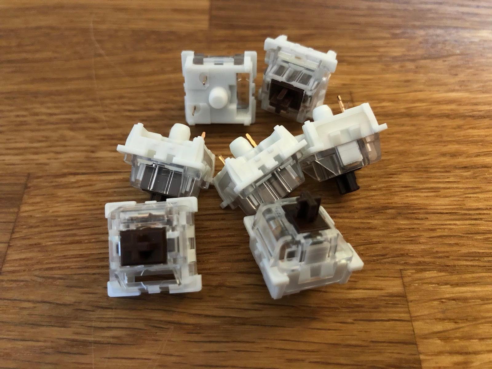
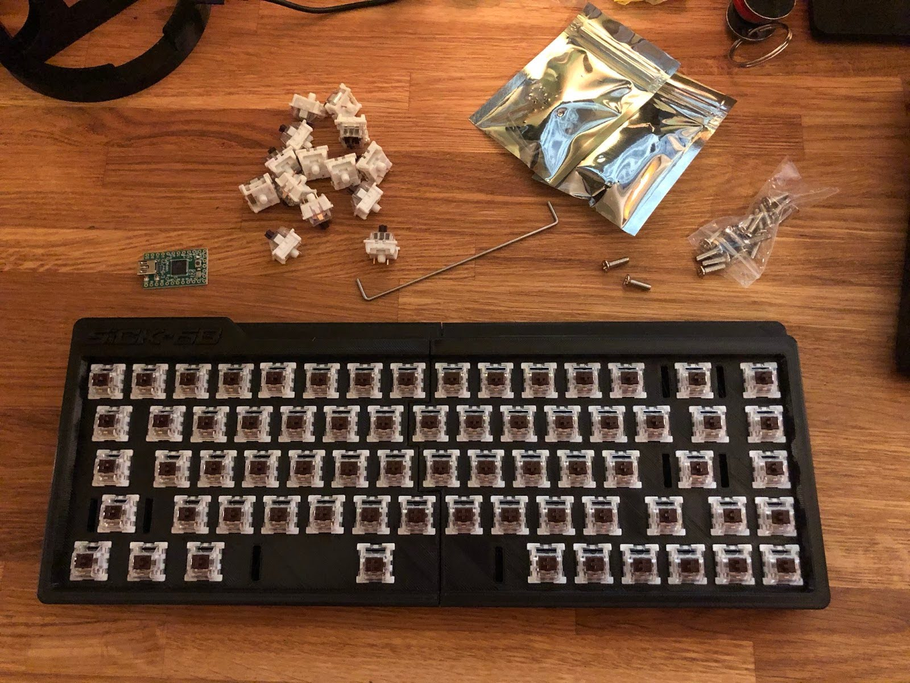
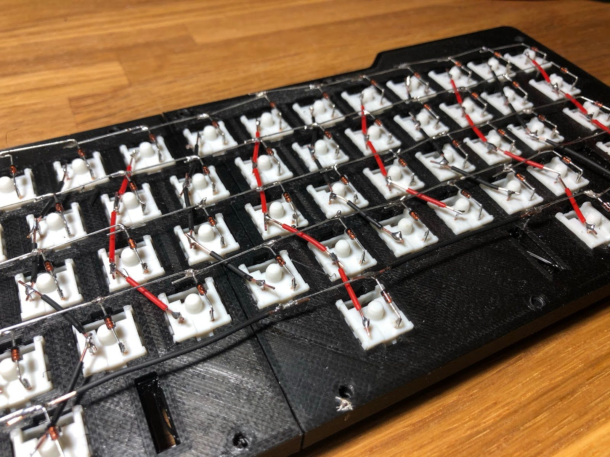
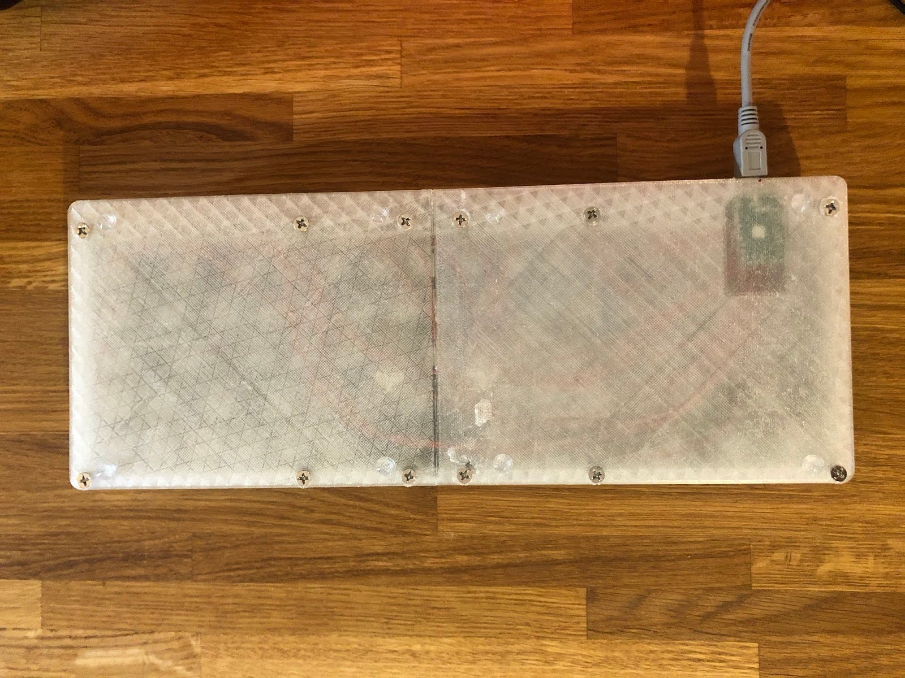
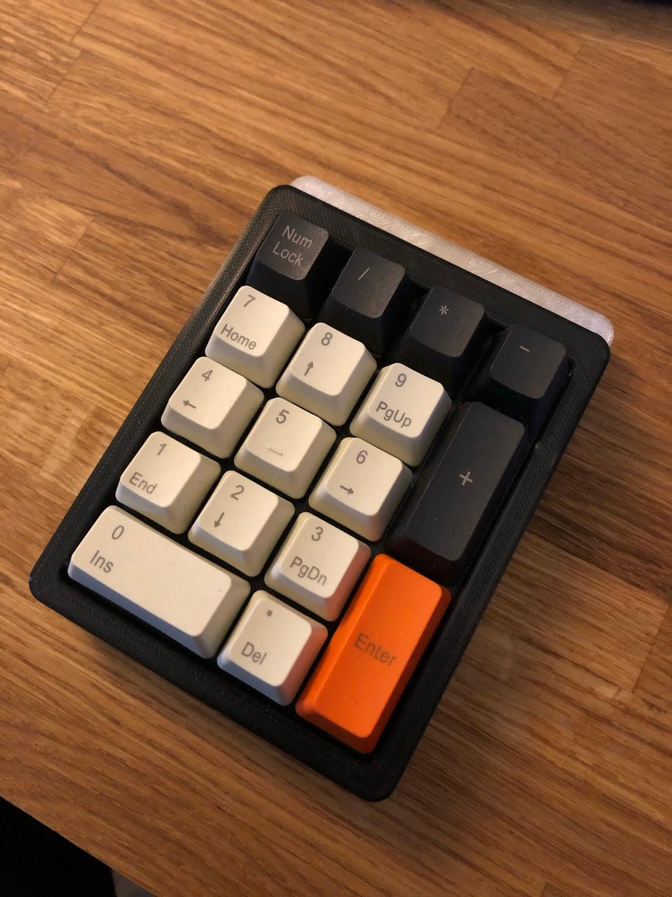

2020-12-16
Now that more of us are working from home than ever before, it's becoming more important to have a permanent, comfortable setup. At least that's how I convinced myself to build my own mechanical keyboard.
I've liked the idea of a mechanical keyboard for a while, but I didn't want to just buy one. Although some keyboards have QOL features (Bluetooth, RGB, etc.), at its core a keyboard is just a collection of momentary switches, so I'll try to keep things simple for myself.
Requirements
- The components must be cheap (or 3D printable)
- It must use off-the-shelf parts
- It should be as simple and reliable as possible so it can be used every day
- Ideally a small form factor (around 65%)
- Only simple tools should be required (no lathes or CNC machines)
- It must have arrow keys
- Ideally it should have some of the transport keys, possibly the function keys too
Choosing a Design
With very little Googling, I found the Sick-68 plans on Thingiverse ("SiCK" stands for Super, Inexpensive, Cheap, Keyboard). This was exactly what I was looking for: the bottom part of the chassis and the plate that the switches mount into are all 3D printable.
https://www.thingiverse.com/thing:3478494
Printing the Chassis
Within a couple of days I had the chassis and plate printed in black PLA on my Ender 3. Each of the four pieces took about six hours to print at a 0.2 mm layer height. The bottom two pieces and the top two pieces were then connected and glued together using 3D-printed dowels and superglue.
Switches
I'm not a fan of loud, clicky-clack keyboards. I just wanted something that is enjoyable to type on. This is mostly determined by the type of switch used.
There's a huge range of options, which I won't go into here, but I chose Gateron Browns. They are light to press, tactile, and relatively quiet.

Assembly
This was a fun project to put together. The 3D-printed key plate required very little trimming or sanding to allow the switches to click neatly into each socket.

Next came fitting the diodes to each switch. I originally planned to use steel wire as a bus bar to connect each diode, but I was able to bend the diode legs so that most could connect directly to their neighbour. This also saved me from trimming the diode legs.

Each column of switches was then connected to an I/O pin on the Teensy 2.0 board, following the wiring described in the plans. Each row, on the other side of the diodes, was also connected to pins on the Teensy.

Teensy 2.0
There are hundreds, possibly thousands, of cheap development boards available, many of them Arduino-based. One option would have been an Arduino Pro Micro, and I actually have a few stashed away from other projects.
The issue with the Pro Micro is that it has far fewer I/O pins than the Teensy. This particular fork of the original Thingiverse project was also already set up (both the 3D models and the firmware) for a Teensy. At around £7 delivered, it made sense to stick with it.
This combination of row and column connections, together with the diodes, allows many more switches to be connected to the Teensy than there are individual I/O pins.
Final Assembly
Once the wiring was complete, the backplate and switch plate were ready to connect. This part didn't go entirely smoothly. There are some columns built into the backplate that required gaps in the switch plate wiring. It wasn't a big deal, but I did have to snip and extend a few wires.
After that, I drilled out the holes in the bottom plate (already countersunk during printing). Countersunk machine screws (sizes listed in the Thingiverse BOM) were then used to attach the face plate to the base plate. At this point, the whole keyboard became much more solid.
A few self-adhesive rubber feet stopped it sliding around on my desk.

Aesthetic Tweaks
At this point I decided the all-black chassis was a bit boring. I reprinted the base plate in transparent PLA so I could see the wiring and the Teensy board. It is not completely transparent, but it looks great and makes the keyboard more interesting, even from the top.
Keycaps and Stabilisers
Finally, it was time to fit the keycaps. I chose a cheap set from eBay in a colour I liked (around £12). This was when I realised I had ordered the wrong type of key stabilisers.
I ordered the correct ones and continued fitting the rest of the keys, planning to install the stabilisers once they arrived.
Expanding the Setup
Since this is a 68% keyboard, there is no numpad. I was not sure whether I would miss it. I do use one occasionally, so I found a remix of the Sick-68 on Thingiverse called the Sick-Pad, just in case.
